QGIS Remote Control
Functionality
This plugin let you connect severel QGIS instances and shares the canvas extent. The plugin sets up a TCP network server. So its possible to connect clients on the same or from different mashines.
Using it
- open the configuration docking widget with the button
- start the server with the "start/stop server" button in the toolbar
- connect the clients with the "connect/disconnect client" button from the toolbar (all clients should be in the "connected clients" list of the configuration dock widget)
- check the sync button in all qgis clients you want to sync
- move the map...the center point and zoomlevel should be the same on all instances
-
the arrange button  moves the connected
windows on the same mashine (not on a different one) into a grid position depending on the client count:
- 2 clients:

- 3 clients:

- 4 clients:

- 2 clients:
Bugs
The plugin is highly experimental and not fully working yet. You found a bug? You want to contribute with code or ideas? Contact us on the project page